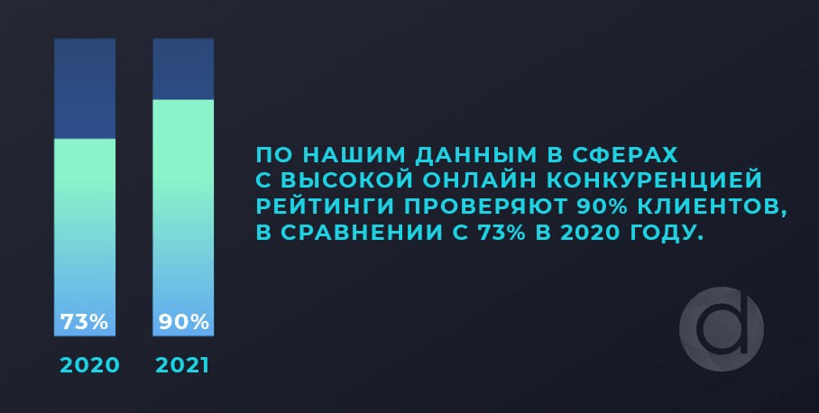

БЛОГ
Новости
Продаж нет, а негатив в Сети только растет? Может быть, уже пора подтягивать репутацию?
Сегодня хотелось бы поговорить о методах, которые помогут в формировании начальной репутации в Сети на примере федерального кафе.
03.06.2021
5 минут
Новости
Мониторинг: ручной или программный?
Мониторинг в Интернете подразумевает собой работу по отслеживанию различных показателей для дальнейшей аналитики, прогнозирований и простраивания стратегий.
14.10.2021
0 минут
Новости
Черный пиар. Кейс: Очистка репутации строительно-инвестиционной компании
Продолжаем рубрику разбора ситуаций по направлению Управление репутацией. На этот раз разберем пример атаки конкурентов на строительно-инвестиционную компанию или в простонародье акт «черного пиара».
20.10.2021
0 минут
Новости
Локдаун нельзя работать. В каком месте поставите запятую вы?
Давайте немного поговорим о наболевшем?
02.11.2021
0 минут
Новости
5 (не)вредных советов по Управлению репутацией
Пока мы готовим для вас большую статью про Управление репутацией, решили написать 5 небольших (прям маааааленьких) советов по УР.
08.12.2021
0 минут
Новости
«Плохие» площадки-отзовики
Сегодня мы решили поговорить на крайне интересную и довольно щепетильную тему, с которой сталкиваются все, кто как-либо связан со сферой маркетинга и ORM – о площадках о работодателе. А еще точнее – об их производных, которые мы ласково называем «площадки-кормёжки».
16.06.2022
0 минут
Новости
Негативные отзывы. Как выбраться из болота?
22.12.2022
0 минут
Новости
Бизнес VS Бизнес. 5 тактик в переговорах, которые действительно работают
17.02.2023
0 минут
Новости
5 причин, почему репутация вашего бренда или компании находится под угрозой
22.02.2023
0 минут
Новости
Существует ли институт репутации в России?
И стоит ли компаниям включать в статью расходов услуги по репутационному маркетингу.
25.03.2023
0 минут
Новости
Кофе, печеньки и дружный коллектив. Как работать с площадками о работодателях
Без лишних прелюдий выясняем, почему сливаются кандидаты, где искать настоящую обратную связь от сотрудников, и как не испортить репутацию компании в Сети. Погнали!
19.04.2023
0 минут
Новости
В чём сила, брат? В репутации! DAYNET на Digital Оттепель 2023
6 апреля 2023 года наша команда принимала участие в ежегодной крупнейшей офлайн-конференции в сфере IT, маркетинга и инноваций
03.05.2023
0 минут
Новости
Какому бизнесу подойдет SMRM - маркетинг, и в чем его отличие от SMM?
11.07.2023
0 минут
Новости
МАРКЕТОЛОГИЯ vs МЕМОЛОГИЯ
Тесен ли этот мир для них двоих? Как использовать юмор для продвижения бренда?
13.09.2023
0 минут
Новости
Это нетворкинг, детка: как зарабатывать деньги и вести дела с помощью незнакомых людей
16 сентября наша команда «DAYNET» посетила интересное мероприятие, и сейчас вкратце расскажем, что же это такое и почему это выгодно любому бизнесу.
26.09.2023
0 минут
Новости
КУЗНИЦА МАРКЕТОЛОГА. Чем пользоваться в 2023 году?
Маркетинг не стоял и не стоит на месте. Новые технологии, инструменты и методы тут и там. Они помогают компаниям продвигать свои продукты и услуги на рынке. Давайте чуть-чуть рассмотрим три основные тенденции, которые определяют специфику работы сегодня, завтра и ещё очень долго.
05.10.2023
0 минут
Новости
Работа с публичной репутацией застройщика
«Покупатели выбирают квартиру по цене, а застройщика - по репутации»
13.11.2023
0 минут
Новости
Тимбилдинг. Кто такой?
Когда люди работают вместе, они сталкиваются с различными проблемами и конфликтами. Разобраться с этим помогает дружеская и доверительная атмосфера в коллективе. Для её формирования организуются общие посиделки, совместные игры (настольные или квизы), спортивные мероприятия, тренинги и всё такое прочее.
24.11.2023
0 минут
Новости
Праздничная традиция
Новый год - это время, когда все ждут подарков. Люди стараются радовать друг друга и ищут что-то особенное, полезное, согревающее, либо просто весёлое.
21.12.2023
0 минут
Новости
«Итоги 2023
Подходит к концу 2023 год, и мы подведем такой итог: для нас эти 12 месяцев были очень насыщенными 😁😁
16.06.2022
0 минут
Продаж нет, а негатив в Сети только растет? Может быть, уже пора подтягивать репутацию?
020

Сегодня хотелось бы поговорить о методах, которые помогут в формировании начальной репутации в Сети на примере федерального кафе. Для начала представимся, кто мы такие. Мы – Репутационное бюро DayNet (Day – как день, Net – как сеть). На рынке более 7 лет, управлением репутацией занимаемся 5 лет и теперь начинаем транслировать наш опыт на большую аудиторию. Здесь уже не раз рассказывалось, что же такое Управление репутацией в Интернете, но мы немного введем вас в курс дела простыми словами, с минимумом заумных терминов. Репутация в Сети – это, прежде всего, ваш виртуальный имидж, лицо вашей компании, которую видит потенциальный клиент, когда будет вас гуглить или яндексить. Управление репутацией (УР) в Сети – это все те средства и методы, которые помогают вам этот имидж приобрести. Очень важно понять, что УР сегодня – это уже давно не тупая накрутка отзывов, это гораздо большее: красиво оформленные карточки компании на площадках обсуждения; сформированная поисковая выдача по брендовым запросам; красивый набор поисковых подсказок; наличие, как положительных, так и негативных (они тоже имеют очень большое значение) отзывов о компании и продукции с ответами от официального представителя на все имеющиеся отзывы, и много-много чего еще.
DayNet Теперь, когда мы быстренько прошлись по теории, переходим к практике. Итак, ситуация:
Федеральная сеть кафе открыла в двух городах новые заведения общественного питания с адресной доставкой еды. Отношение жителей города было нейтральным, т.к. мало кто знал о преимуществах сервиса, не работало «сарафанное радио», заказов практически не было. Вложения в бизнес не окупались, надежды владельца не оправдывались и в итоге кафе ушли в минус. Было принято решение обратиться к нам.
Внимание, спойлер! Сразу расскажем вам финал нашей работы: мы подогрели интерес населения, создали «шумиху» и помогли заведениям стать популярными. Что же мы для этого сделали? 1. Систематизировали и актуализировали информацию на всех площадках и по всем заведениям. Согласитесь, что вы будете недовольны, если вам придется искать правильный номер телефона, график работы или адрес, переходя с площадки на площадку и пытаясь докопаться наконец-то до правильной информации. 2. Красиво оформили сайт (да-да, этим мы тоже занимаемся) и страницы в социальных сетях, ведь красиво оформленный сайт, корректно работающий и отвечающий всем требованиям пользователей и живые соцсети - один из столпов имиджа компании. 3. Провели работу по регистрации 30 "лидеров мнений" на площадках обсуждения и плавно подняли рейтинг заведений – этакая стартовая база и для новых потенциальных клиентов попробовать заказать что-то в заведении, о котором ты ранее не слышал, и для прироста органических отзывов на нужные нам площадки. Отметим, что именно в этот момент и начало работать «сарафанное радио». 4. Сформировали ТОП поисковой выдачи методами SERM. Это наш основной фронт работ, который плавно вытекает из 3 пункта. Мы наполнили поисковую выдачу подконтрольными нам площадками: и это не только площадки-отзовики, но и сайт, соцсети, форумы и прочие площадки для закрепления в поиске. 5. Создали завлекающие обсуждения на основе инсайдерских историй. Форумы – наше все (и да, смеем вас уверить – люди там еще сидят)! Мы лишь подталкиваем пользователей в нужную сторону, а дальше они сами делают нашу работу. Сложность в том, что форумы – это хаос и им нужно уметь управлять, поэтому обсуждение ведется с аккаунтов "лидеров мнений", которым доверяют и которые могут нивелировать негатив. 6. Дублировали анонсы о скидках и акциях на площадках. Все мы любим акции и скидки, но не любим спам этих акций на почту или в смс, а вот когда нам кто-то о них рассказывает «с огнем в глазах» – это другое дело. 7. Вели открытые диалоги от лица официального представителя. И это ооочень важно! Не просто сказать «спасибо за отзыв», а дать клиентам понять, что любой их вопрос или претензия не останутся без ответа, и что к каждому из них будет индивидуальный подход.
.jpg)
DayNet Какой результат мы получили по результату проведенных работ в течение 3х месяцев? Во-первых, мы достигли главной цели – ежемесячно доходность кафе увеличивалась на 30-40% по сравнению с предыдущим месяцем. Во-вторых, компания получила красивый сайт и социальные сети. В-третьих, была сформирована поисковая выдача по ключевым брендовым запросам. В-четвертых, налажена работа с официальным представителем.
Управление репутацией – это большая стратегическая работа, а ваше лицо в Сети – залог вашего успеха и бизнеса в целом!
Мониторинг: ручной или программный?
019
Мониторинг в Интернете подразумевает собой работу по отслеживанию различных показателей для дальнейшей аналитики, прогнозирований и простраивания стратегий. Мониторинг бывает разный, не только по технической составляющей (каким способом), но и по целям и задачам, которые мы преследуем. Например, вы хотите приобрести квартиру и начинаете заниматься поиском той самой, устраивающей вас по всем параметрам, квартиры: новостройка это или вторичка, какой район, какая площадь, этажность, транспортная доступность. Если это новостройка — то смотрите, что за застройщик, если вторичка — ищите есть ли задолженности по квартире и т.д. Это и есть мониторинг. И даже, если вы обратитесь к риелтору — этим мониторингом займется он, на основании ваших критериев и хотелок. Мониторинг бывает разный, не только по технической составляющей (каким способом), но и по целям и задачам, которые мы преследуем. Например, вы хотите приобрести квартиру и начинаете заниматься поиском той самой, устраивающей вас по всем параметрам, квартиры: новостройка это или вторичка, какой район, какая площадь, этажность, транспортная доступность. Если это новостройка — то смотрите, что за застройщик, если вторичка — ищите есть ли задолженности по квартире и т.д. Это и есть мониторинг. И даже, если вы обратитесь к риелтору — этим мониторингом займется он, на основании ваших критериев и хотелок. Сегодня же мы поговорим о мониторинге упоминаний о компании / персоне / бренде в Интернете. Тема, которая в нашей компании вызывает всегда жаркие дебаты. Для чего компаниям нужен мониторинг? Чтобы отследить появление новых упоминаний (не только негативных, но и позитивных). Чтобы отследить появление новых отзывов, новых веток на форумах, каких-то новостных статей, обзоров, публикаций в социальных сетях и т.д. Чтобы быстрее выявить тональность обсуждений и лояльность аудитории по отношению к компании / персоне или бренду и успеть быстро среагировать и перенаправить внимание в нужное нам русло. Чтобы проанализировать уровень активности и при необходимости увеличить ее. Чтобы проанализировать болевые точки объекта мониторинга, которые подмечают пользователи Или даже успеть вовремя выявить черный пиар! Мы делим мониторинг на три вида: ручной программный (автоматизированный) смешанный
1.Ручной мониторинг упоминаний
Ручной мониторинг наиболее трудоемкий и трудозатратный из всех. Почему? А вот представьте, у вас сеть кафе, состоящая из 20+ филиалов. У каждого филиала есть, как минимум, 10 карточек на сайтах отзовиках (здесь же и три популярных картографических сервиса — Яндекс, Google, 2gis; и самые популярные отзовики — Yell, Flamp, Отзовик; и мелкие справочники). Итого получаем, что минимально по сети кафе с 20-ю филиалами ежедневно придется проверять более 200! карточек. И ежедневно вам надо каждую открыть, пролистать до раздела с отзывами, посмотреть на появление свежих упоминаний, закрыть, открыть следующую и так 200 раз! Это оооооочень долго! И это только мониторинг площадок, а есть же и поисковая выдача, которую также необходимо будет проверить! А это минимум 2 брендовых поисковых запроса по каждому филиалу с указанием адреса и 2-3 поисковых запроса по всей сети. Итого, еще 86 поисковых запроса надо будет промониторить. Почему 86? Не забываем, что мониторинг поисковой выдачи делаем не только в Яндексе, но и в Google! В таблице мы привели плюсы и минусы ручного мониторинга:
2.Программный или автоматизированный мониторинг.
Сейчас существует огромное множество программ, которые будут выполнять мониторинг за вас, существенно упрощая жизнь вам и вашим сотрудникам. Такие сервисы не только оповещают о появлении новых упоминаний, но и простраивают графики и отчеты. Некоторые программы способны даже сами определять тональность отзывов и упоминаний и соотносить их к разным категориям. Для кого подходят сервисы для мониторинга? Да для всех, но! Логичнее сначала провести аналитику и мониторинг ручным способом и посмотреть активность на площадках, где присутствует ваша компания. Если активности нет, отзывы появляются реже 1 раза в месяц, новости не появляются вообще, то сервис мониторинга будет приносить вам только больше денежных затрат на ежемесячную подписку, нежели пользу. Или же у вас маленькая компания с одним офисом. Проще выделять 30 мин в день два раза в неделю на мониторинг поисковой выдачи и площадок. Плюсы и минусы автоматизированного (программного) мониторинга:
.png)
3.Смешанный метод мониторинга
Он вытекает из последнего пункта минусов программного мониторинга. Какой бы классный сервис не был, как бы его алгоритм не работал, все равно это машина, которая не способна со 100% достоверностью выполнять все ваши запросы и собирать абсолютно все данные по вашей компании. Поэтому главная мысль, которую мы бы хотели донести, как Репутационное бюро: какой бы метод мониторинга вы не выбирали: «доверяй, но проверяй». И в случае с ручным мониторингом (сами за собой), и в случае с автоматизированным. И помните, что сначала необходимо провести мониторинг по компании ручным способом и сделать аналитику ситуации. Так будет проще определить, какой же способ мониторинга подойдет вам лучше. А также вы всегда можете обратиться к нам за консультацией.
Черный пиар. Кейс: Очистка репутации строительно-инвестиционной компании
018
Продолжаем рубрику разбора ситуаций по направлению Управление репутацией. На этот раз разберем пример атаки конкурентов на строительно-инвестиционную компанию или в простонародье акт «черного пиара». Немного теории, иф ю ноу олл зис скрольте дальше)

Чёрный пиар (ЧП) — деятельность, способная буквально за считанные дни уничтожить имидж компании, бренда, лица, политиков, звезд и др. Основное «оружие» - это конечно информация, правдивая, выдуманная или гипертрофированная, она выкладывается там, где в первую очередь собирается ваша ЦА и которая с охотой разнесет эту информацию по всему свету. При этом заказчиками черного пиара могут выступать не только конкуренты (от них как раз можно ожидать чего-то подобного), но и ваши же сотрудники, бывшие коллеги, знакомые и, к сожалению, родственники и друзья.

Вот некоторые признаки, по которым можно распознать ЧП: 1. В интернете начинает появляться большое множество негативных статей и отзывов о вас, вашей компании, вашем бренде (если ЧП делают дилетанты, то их легко распознать по датам отзывов – они будут одинаковые или с минимальным разрывом; по большей части весь негатив будет одинаковым).

2.Вся инфа распространяется преимущественно по бесплатным каналам (социальные сети, третьесортные «СМИ», площадки отзовики, блоги, форумы и т.д.). 3.Большая часть статей, отзывов и комментариев низкого качества, содержат ошибки. 4. Все размещается с авторегов, ботов или свежесозданных профилей — у таких аккаунтов не заполнена информация в профиле, нет фотографий, каких-либо записей в соцсетях или отзывов по другим компаниям. Если вы столкнулись с этими признаками, первым делом НЕ пытайтесь что-то делать самостоятельно! В большинстве случаев любой не обдуманный шаг или решение на горячую голову может только усугубить ситуацию! Иначе вот к чему могут привести ваши необдуманные действия:


Первым делом следует обратиться в компанию, занимающейся Управлением репутации и проконсультироваться со специалистами, что же следует сделать и как вернуть все на былые места. А теперь перейдем непосредственно к ситуации.
На крупного федерального застройщика обрушилась сильнейшая атака конкурента. На 70% тематических порталов появилось много несоответствующей действительности негативной информации. Обсуждения пестрели негативом и на слуху был только этот застройщик. Компания понесла огромные убытки.
Сразу рассказываем итог наших проделанных работ: Мы помогли отразить атаку и разоблачили конкурента! Для этого мы делали следующее: Шаг 1. Каждый день проводили мониторинг и аналитику репутационной ситуации. Важно следить что и где появляется новое (отзыв, статья, смысловая нагрузка, дата выставления, от кого, какой аккаунт). Шаг 2. Зарегистрировали официальные представительства на площадках обсуждения. Очень важно вести диалог с пользователями, даже если это ЧП и аккаунты-боты. Для реальных пользователей будет ощущение, что компания не уходит от ответа и работает над собой! Шаг 3. Организовали каналы управления новой информацией. Этот шаг мы сделали, чтобы перенаправить обсуждения в подконтрольные нам каналы (закрытые чаты в соцсетях, мессенджерах, форумах) с представителем от компании, который всегда отвечает на любые вопросы пользователей. Таким образом люди получают информацию из первых уст и не доверяют вбросам. Шаг 4. Создали официальные темы обсуждения. Помните да? Форумы наше все) Заманиваем туда пользователей и никуда оттуда не выпускаем) Шаг 5. Дольщикам и потенциальным клиентам привили привычки отправлять все каверзные вопросы одним файлом на конкретные 3 площадки обсуждения. А как мы это сделали секрет фирмы) Шаг 6. Давали развернутые, честные и своевременные официальные ответы. Еще раз фиксируем, что общение с клиентами от лица официального представителя один из столпов Управления репутацией! Шаг 7. Конечно же отправляли заявки на удаление данных негативных отзывов админам площадок. Как сделать это правильно? Часто администрация площадок НЕ идет на уступки в вопросах удаления отзывов. Но, если вы можете подкрепить все доказательной базой, собрать весь список отзывов, которые были оставлены в рамках ЧП, то с высокой долей вероятности администрация пойдет вам на встречу. Конечно, если это не жесткие площадки, где за удаление надо обязательно заплатить. Это делать не стоит ни в коем случае, иначе вы попадете в капкан владельцев площадки, которые будут постоянно вас “доить”. Получили результат: ТОП поисковой выдачи в Google и Yandex очищен от накрученных деструктивных высказываний о застройщике. Благодаря свежей и исчерпывающей информации на доступных площадках обсуждения, количество негативных обращений сведено к минимуму. И конечно же общим взаимодействием с клиентом мы смогли идентифицировать личность черного пиарщика. Как? А это уже секрет фирмы) Скажем лишь, что зачастую черные пиарщики попадаются на мелочах.Локдаун нельзя работать. В каком месте поставите запятую вы?
017
Давайте немного поговорим о наболевшем?
Абсолютно любой бизнес, крупный или маленький, ощутил на себе всю боль по итогам 2020-2021 годов. Очень много компаний и предприятий закрылись; часть сейчас еле держится, но с большими потерями; часть выжила и осталась на плаву, но также не без потерь. Всех нас прижало со всех сторон (и даже нас): у кого-то были (или есть) проблемы с поставками из-за рубежа; у кого-то проблемы с поставками внутри страны, т.к. партнеры тоже страдают; кому-то запретили работать, в связи с их родом деятельности; кто-то не пережил упадок клиентов. Но есть и те, кто совершенно спокойно пережил 2020й год и даже приумножил свой доход. Есть те, кто до пандемии еле еле сводил концы с концами, а в период карантина смог взлететь и занять место в нише.

Скажем честно, у нас тоже начали отваливаться клиенты, но пандемию мы пережили, без потерь в штате сотрудников и без потерь в выручке. Итак, 2020-й год. Первый локдаун. Все заперты дома, в 4-х стенах. Кто-то продолжал работать на удаленке, кто-то вообще не работал. Так как же в таких условиях выжить бизнесу?
Выход один — переход в онлайн.
Мы более чем уверены, что каждый почувствовал, насколько шагнуло вперед интернет-пространство и насколько увеличился интерес к нему у общества. Что же еще делать дома взаперти, как не серфить в интернете? И здесь, тот, кто успел, тот и в дамках. Так кто все-таки выжил в пандемию? Все просто. Выжил тот, кто перевел свой бизнес в онлайн и: не сокращал бюджет на рекламу. Не дайте и шанса людям о вас забыть! начал заниматься активной продажей онлайн и доставкой товаров. Еда, продукты, цветы, книги, строительные товары (привет соседям сверху), и даже авто. Доставка вообще семимильными шагами шагнула вперед за время пандемии. начал продавать онлайн курсы. Первый карантин — это было прекрасное время для изучения чего-то нового: рисование, копирайтинг, блогинг, кулинарные курсы. Людям было интересно абсолютно все. начал активную работу в своих социальных сетях, в т.ч. на взлетевший во время пандемии площадке TikTok. начал работы по Управлению репутацией в Сети. Так как мы — Репутационное бюро, мы подробнее *зачеркнуть* расскажем как космические корабли бороздят просторы большого театра *зачеркнуть* разберем как раз таки последний пункт (не, ну а что такого, нам можно))). В 2021 году блок репутации был на каждом маркетинговом форуме и мероприятии, за редким исключением.

Управление репутацией стало неотъемлемой частью ведения современного «посткарантинного» бизнеса. “Лояльность" клиентов получила еще больше возможностей измерения и учета, и может быть отражена в реальных показателях. Качественная работа по организации удобного, быстрого и результативного общения клиентов с компанией позволяет вовремя реагировать на изменения спроса у клиентов. Это и общение в социальных сетях и на площадках обсуждения, и на форумах, и работа от официального представителя. В условиях локдауна количество онлайн запросов увеличивается в несколько раз, а качество информации, которую пользователь может найти — напрямую влияет на заинтересованность клиентов в покупках. Сюда относим и насколько активно у вас ведуться социальные сети, насколько вы быстро отвечаете своим клиентам, а также актуальная ли у вас информация на площадках обсуждения. В 2021 году рейтингами стали интересоваться на 17% чаще.

А также
Мы рекомендуем вести живое общение и следить за качеством и скоростью ответов клиентам во всех существующих чатах и на площадках обсуждения. “Роботизированное” общение и шаблонные сухие ответы, не содержащие в себе никакой информации кроме "просьбы связаться удобным способом" или “ответили вам в директ” — самый худший вариант общения с пользователем, который бесит большую часть людей, если честно. Люди не будут задавать интересующие их вопросы в системах, где они замечают данные шаблонные ответы. Любое желание пропадает, увы. К тому же, общение на площадках обсуждения и в социальных сетях — это прямой способ замены рекламных кампаний для сфер попадающих под запрет прямой рекламы (таких как вейпы, табачка, интим салоны). Если за 10 лет вашей работы у вас всего 2 отзыва — это значит лишь то, что людям это неудобно, а не то, что с вами не хотят общаться. Следует выяснить, как сделать так, чтобы клиенты оставались довольны, а вы получали желаемую обратную связь. В 2021 году постоянно растет спрос на бирже труда. Многие за время локдауна решили сменить сферу своей работы, успели переквалифицироваться и ищут вакансии, а компании, в свою очередь, ищут ценные кадры.
Тем более, что геолокация вакансий увеличилась, в связи с тем, что многие поняли прелести удаленки и отличный специалист из Томска может устроиться на работу в московскую компанию. Именно поэтому, в 21 году весь существующий HR напрямую связан с работой на биржах и площадках поиска сотрудников/работодателей. Если вы не работаете с репутацией работодателя на профильных площадках обсуждения — вы очень много переплачиваете за HR и теряете ценные кадры, которым не все равно в какой компании они работают. Убедили ли мы вас в необходимости начать работы по Управлению репутацией? А если вы хотите бесплатную консультацию по УР звоните +7 831 228 22 00
5 (не)вредных советов по Управлению репутацией
016
Пока мы готовим для вас большую статью про Управление репутацией, решили написать 5 небольших (прям маааааленьких) советов по УР.
Никакой воды, только по делу)
1. Не стоит работать на площадках обсуждения, где нет вашей аудитории «постольку- поскольку». Смысл заполнять справочники отзывами, если 80-90% трафика идет через картографические сервисы, «Великий и Могучий» Отзовик и социальные сети? Поэтому не стесняемся "мучить" репутационного подрядчика вопросами типа "почему вы выбрали именно эти площадки для работы и почему именно такие объемы") Помним, ничего не должно делаться просто так, так сказать "для галочки", все работы и объемы должны преследовать конкретные, понятные и реальные цели. 2. Только положительные отзывы – ПЛОХО. Запомните раз и навсегда! Наличие только положительных отзывов может посадить зернышко сомнения в головы ваших потенциальных клиентов, что «что-то тут не чисто». Ну не может товар или услуга нравится абсолютно всем, всегда будут недовольные. Необходимо грамотно отрабатывать негатив, т.к. обратная связь от компании показывает, что вам не наплевать на клиентов.
Отсюда же вывод - стараться удалить вообще весь негатив не только почти невозможно, но и потенциально пагубно для вашей репутации. 3. SERM - это особый случай ORM. Но не стоит забывать, что они наиболее эффективны в тандеме. Да, ORM может менять структуру поисковой выдачи, но вау-эффекта без SERM при большом наличии негатива не будет. И об этом мы расскажем более подробно в следующей статье) 4. Никогда. Просим! Ни-ког-да! Не покупайте отзывы на бирже!! Многие площадки отслеживают комментарии по IP и геолокации, и при подозрительной активности могут блокироваться как отзывы, так и сама карточка компании. Кроме того, вы с легкостью можете попасть в ТОПы компаний, которые могут обмануть.
Пы.сы. Еще пару раз мы сталкивались с тем, что компания (со своей официальной страницы!) засветилась в обсуждениях на бирже при попытке купить отзывы. И, увы, эту инфу не удалить. 5. Отвечайте абсолютно на любой комментарий или отзыв, положительный он или негативный. Бывают случаи, когда компания отвечает только на негатив, игнорируя позитив, и наоборот. Такого быть не должно. Клиент не должен получать молчание в ответ на позитивный или негативный отзыв. Не ленитесь потратить несколько минут своего времени и написать «Благодарим за отзыв, ждем Вас снова» в ответ на краткое «Хорошее место». И уж тем более не игнорируйте восклицания «Администратор нахамила»!
«Плохие» площадки-отзовики
015
Сегодня мы решили поговорить на крайне интересную и довольно щепетильную тему, с которой сталкиваются все, кто как-либо связан со сферой маркетинга и ORM – о площадках о работодателе. А еще точнее – об их производных, которые мы ласково называем «площадки-кормёжки». Надо сказать, что существует множество различных площадок и их классификаций. Среди них выделяются, например, картографические сервисы, отзовики, справочные ресурсы и т.д., но сейчас мы осветим только эту конкретную категорию. Потому что очень уж она скользкая и неприятная) Справка: Площадки о работодателе – это обычные сайты-отзовики, такие как Правда Сотрудников, antijob и т.д. «Площадки-кормёжки» – это тоже площадки о работодателе, но, если покопаться, то становится понятно, что это клоны популярных площадок-отзовиков. И отличаются они от оригиналов лишь окончанием адреса сайта и тем, что на них появляются ТОЛЬКО негативные отзывы о компаниях. Дисклеймер: С них можно удалять отзывы))) но для этого придется хорошенько заплатить) Кажется, мы добрались до сути: все эти дублеры построены на том, чтобы сеять негатив и выкачивать с вас деньги за удаление отзывов.
Как же они работают?
Самые находчивые «предприниматели-бизнесмены» делают копии популярных площадок и заполняют карточки компаний негативными отзывами: Копируя их с других площадок (с оригинальной версии или с любых других) Пишут сами негативные отзывы и размещают их Самое плохое, что данные клоны в 99% случаев выстреливают на первые страницы поисковой выдачи по вашей компании. И вот вы уже не серьезный работодатель, а ужасная «шарашкина контора» с черной зарплатой и склочным коллективом. Спустя n-ное количество времени с вами на связь может выйти «компания», которая, якобы, занимается управлением репутацией и может эти отзывы удалить раз и навсегда…конечно, за неплохую такую сумму. Как вы догадались, те, кто создал «плохой» дубль сайта о работодателе, и те, кто предложил такую услугу, как правило, – одно и то же лицо. Это факт. Удаляются негативные отзывы на таких площадках тоже не просто так. Здесь могут быть условия) Какие? Итак, вариант 1: Вы платите единоразово около 150 к (тут, конечно, все зависит от совести «предпринимателей-бизнесменов», сумма может быть, как меньше, так и больше). Отзывы магическим образом исчезают, а карточка блокируется, например, на год, в течение которого негативные отзывы проходить не будут. Вариант 2: Вам предлагают «выгодную подписку». Тут все просто: вы платите плюс-минус 40 к ЕЖЕГОДНО, и имеющиеся негативные отзывы скрываются, а новые не появляются. В чем подвох? Как только вы слезете с этой «иглы доильщиков», отзывы магическим образом снова открываются, да еще и сверху вам накидают, так сказать, в довесок. Вариант 3: Вам называют стоимость удаления 1 отзыва. Например, 15 тыс. рублей. Соответственно, если на вашей карточке 10 отзывов, сумма сразу превращается в х10) А теперь переходим к самому интересному – ниже мы приведем 100-процентные «площадки-кормёжки», которые могут вымогать деньги с компаний.
Сайты-клоны Antijob
Есть всеми «любимый» Antijob, а именно https://antijob.net, antijob.info, antijob.tf или их реальное зеркало - antijob.appspot.com. Только с этими окончаниями!!! Все эти ссылки – это ОРИГИНАЛЫ сайта. Площадка сама по себе не сахар (от слова совсем). Они НЕ удаляют отзывы ни за какие деньги. Отвечают отказом на просьбы официального представителя. Называют себя «идейными» анархистами – сторонниками социального равенства и общественного самоуправления. А есть сайты-клоны Antijob, которые под «дизайном» оригинала выдают себя за настоящую площадку (это только те, с которыми мы сталкивались на своей практике): https://antijob.top https://antijob.name https://antijob.site

Оригинал Antijob

Клон Antijob
Кстати, на оригинальной площадке (https://antijob.net) в разделе «FAQ — часто задаваемые вопросы» есть такая пометка: В интернете существует ещё несколько сайтов Antijob, но они отличаются. Почему они появились? Сайты, копирующие наш, преследуют либо коммерческие цели, пытаясь монетизировать трафик, на который есть запрос, либо создаются теми компаниями, о которых на нашем сайте опубликованы отзывы, дабы подмочить репутацию проекта, например, брать деньги за удаление отзывов. К нам относятся на данный момент лишь три домена:antijob.net, antijob.info, antijob.tf; а также зеркало antijob.appspot.com. Все ведут на один сервис. Будьте бдительны! Antijob На сайте reg.ru можно ознакомиться с доменами antijob и какое количество уже занято))
Дубли сайта Правда Сотрудников
Правда Сотрудников – это оригинал сайта отзывов о работодателях. Здесь можно писать и позитивные отзывы, и негативные. Площадка очень продвинутая в техническом плане, на ней присутствует ряд проверок на достоверность отзывов, на черный пиар, на накрутку отзывов. Например:

Штампы площадки Правда Сотрудников

Штампы на отзывах на площадке Правда Сотрудников
А вот и их сайты-клоны: https://pravda-sotrudnikov.net/ http://pravda-sotrudnikov.com/ https://pravda-sotrudnikov.org/ и https://pravda-klientov.org/ https://pravda-sotrudnikov.site/

Оригинал Правды Сотрудников

Клон Правды Сотрудников
Администрация главной площадки тоже давала комментарий по своим копиям:
Источник: https://vk.com/pravda_sotrudnikov
Надеемся, что данный материал будет интересен нашим читателям и тем, кто столкнулся с «плохими» площадками-отзовиками. Ну а если вы знаете какие-то похожие «площадки-кормёжки» – делитесь в комментариях) Эта информация будет актуальна всем! О каких площадках поговорим в следующий раз? Пишите, что интересует, обсудим)
«Плохие» площадки-отзовики
014
Итак, ситуация — компания тонет в негативных отзывах. Это не накрутка или чёрный пиар, а реальные пользователи с реальными претензиями. Что делать? Погнали: 1) Выявить появление свежего негатива с помощью мониторинга. Тут в помощь наша статья . 2) Проверить отзывы на достоверность: - Был такой клиент или сотрудник? - Он есть в базе данных? - Вы знаете о ситуации, про которую написано в отзыве? 3) Составить подробный официальный ответ и разместить его. Исключить шаблоны: “Нам очень жаль”, “Извините за причинённые неудобства”, “Мы обязательно проведём работу с персоналом” и подобные. Только факты по конкретной ситуации, ничего лишнего. В официальном ответе обязательно предложить связь по электронной почте, скидки, бонусы. Клиент натурально должен видеть заботу. И ни в коем случае нельзя вступать в конфликт.


Чтобы разместить официальный ответ на конкретной площадке, нужен официальный представитель. Если его нет – зарегистрировать. Когда на сайте отсутствует такая возможность – создать профиль пользователя с именем компании и действовать от его лица 4) Явный троллинг, чёрный пиар или отзыв просто бредовый? Работаем над его удалением. Как? Изучить правила площадки, в частности обжалование, написать в техподдержку, дальше покажут, расскажут. НО! Негативные отзывы нельзя удалить просто потому, что они вам не нравятся. ВАЖНО! Если какое-то агентство по управлению репутацией говорит, что на 100% удалит весь негатив – это чистое враньё! Либо площадки пошлют куда подальше (например, в суд, чтобы обжаловать отзывы), либо потребуют платить. И не один раз, а регулярно. Как только спонсирование прекратится, негативные отзывы снова появятся, так как администраторы просто откладывают их дальний ящик. А могут вообще увеличить количество негатива в несколько раз. Мошенникам выгодно такое сотрудничество, они сами накрутят такого, что в страшном сне не предвидится. Лучше перебдеть, чем недобдеть Козьма Прутков Итог: Никому не хочется читать плохие отзывы о своей компании в Сети. Но имеем то, что имеем. По статистике негатив занимает 6% от общего количества. Необходимо уметь с ним работать. Как это делать – решает каждый сам для себя. Но лучше доверить работу опытной команде, которая знает «что, где и откуда». О чем еще мы пишем на vc.ru: «Плохие» площадки-отзовики 5 (не) вредных советов по Управлению репутацией Репутационные работы в соц сетях: SMRM и HM
Бизнес VS Бизнес. 5 тактик в переговорах, которые действительно работают
013
В 2020 году Британская компания YouGov в результате маркетингового исследование выяснила, что бизнес недополучает более 7% выручки именно из-за неумения вести деловые переговоры. Генеральный директор репутационного бюро Daynet Евгений Козырев делится эффективными стратегиями ведения переговоров, основанными на многолетнем успешном опыте с различными нишами бизнеса.
Подготовка
Переговоры помогают вам обрести определенный контроль над вашей жизнью. В ином случае вам остается принимать то, что выбрал за вас кто-то другой
Гэвин Кеннеди, профессор экономики, основатель компании Negotiation Ltd
Подготовка к переговорам — ключевой этап, который непосредственно влияет на ход встречи, и то насколько позитивным будет ее итог. Именно от этого этапа зависит 90% всего успеха переговоров. По наблюдениям моих коллег, пренебрежение этой стадией приводили потенциально успешные сделки к провалу.
Главная ошибка инициаторов переговоров – неструктурированный подход к встрече. Расчет на «авось» и «все решится как-нибудь само».
На подготовительном этапе необходимо: Определить цель и план переговоров: сформулировать проблематику встречи, заранее подготовить аналитический материал о компании, составить программу деловой беседы, а также изучить информацию лицах, которые будут принимать участие в переговорах. На этом этапе важно обладать полными исчерпывающими данными, чтобы в процессе переговоров исключить непредвиденные ситуации. Запланировать дату и место встречи. Подобрать представителей делегации. Заранее проинструктировать делегатов и познакомить их с планом переговоров.
Стадия прояснения
День Х. Вы и потенциальные деловые партнеры собрались в назначенном месте. Начинается процесс переговоров. Эта стадия требует особого внимания. Не рекомендуется сразу же переходить к торгам. Изначально необходимо наладить контакт, определить ценности, точку зрения, интересы каждого участника встречи. Также у каждой из сторон есть основное мотивирующее поведение, которое направлено на удовлетворение конкретных потребностей. То поведение, которое определяет, почему человек думает и поступает определенным образом в конкретной ситуации. Ценности не могут быть предметом переговоров, но их определение может существенно повлиять на результат дискуссии. Не бойтесь задавать вопросы, если тезисы собеседников вам не ясны. Не выдумывайте аргументы за участников встречи и не объясняйте за них их же поступки. Задавая вопросы, вы не только облегчаете жизнь себе, но и создаете эмоциональную и доверительную обстановку. В ходе переговоров особенно важно, чтобы собеседники понимали друг друга и при этом вкладывали в слова один и тот же смысл. Все для того, чтобы избежать искажений информации и превратного толкования слов.
Стадия выдвижения предложений и торга
На этой стадии обычно возникают спорные ситуации, поскольку происходит активный обмен предложениями. Стороны определяют выгоды, которые они получат за время сотрудничества, а также стремятся достичь желаемой цели через уступки и обсуждение финансовых условий, которые имеют различную ценность для каждой из сторон.
Главная ошибка инициаторов переговоров – неструктурированный подход к встрече. Расчет на «авось» и «все решится как-нибудь само».
На этой стадии я выделю 5 важных тактик, которые помогают добиваться значительных успехов в переговорах: Тактика «Неожиданный поворот». Дискуссия рассматривается в новом ракурсе и предполагает поиск новых подходов или эмоциональных импульсов в ситуациях, в которых сложно найти взаимоприемлемое решение. Тактика частичного согласия. Используется в качестве «мягкого» возражения собеседнику для того, чтобы вывести дискуссию в конструктивное русло. Часто используется для нейтрализации негативных установок собеседника и повышает доверие к компетентности говорящего. Например: «С одной стороны я согласен с вашими аргументами, но с другой… Безусловно, вы правы, но как эксперт в этой отрасли, вы понимаете, что…» Тактика фактчекинга. Ссылка на объективные источники, исследования и факты является сильной позицией во время переговоров, и предполагает серьезную теоретическую подготовленность использующего ее. Опора на цифры, графики и KPI переводит переговоры в заинтересованный диалог, в котором лидерство сохраняется за более компетентным участником. «Закон края». Психологами было замечено, что лучше всего запоминаются слова находящиеся в начале и в конце речи. Поэтому начало и конец беседы должны содержать стратегически важную информацию. Заключительные фразы должны соответствовать принципу удовольствия и формировать положительные эмоции: уверенность, надежду, радость, удовлетворение, вне зависимости от того, насколько успешно прошли переговоры. Ведь кто знает, возможно, это компания, с которой снова возникнет перспектива сотрудничества. «Человеческий фактор». Этот прием реализуется в виде эмоционально подкрепленных реплик, учитывающих психологические особенности участников переговоров и их ценностей: комфорта, безопасности, семейных связей, времени, статуса и т.п.
Принятие решений и закрепление договоренностей
Предфинальная стадия переговоров, которая не терпит спешки. Здесь важно определить, удалось ли решить задачи, поставленные в начале встречи, и удовлетворены ли стороны результатом. Для того чтобы узнать, нужно проверить: Ведут ли аргументы сторон к получению нужного вывода? Были ли деловые аргументы приведены в соответствие с особенностями личности и интересами партнеров или они основаны лишь на собственном субъективном мнении? Смогли ли участники переговоров понять смысл наших предложений в полной мере? Имеется ли в запасе альтернативная цель, в случае, если переговоры провалились? Удалось ли сохранить благоприятную атмосферу в конце переговоров? Если стороны заинтересованы в сотрудничестве, то необходимо зафиксировать все результаты переговоров в письменном виде под подписью сторон. Я заостряю на этом внимание из-за того, что в разгаре дискуссии этот этап может попросту выпасть из процесса. Но именно для него и создавались все условия на встрече. Деловые переговоры – это достаточно специфичная область работы деловых людей, которая имеет большое влияние, как на развитие бизнеса, так и репутационную привлекательность компании на рынке. Поэтому необходимо обладать большим инструментарием, комплексом знаний и навыками, которые позволят добиваться выгодных соглашений и крупных контрактов. А если вы уже заинтересованы в формировании положительного имиджа компании и масштабировании вашего бизнеса, специалисты репутационного бюро Daynet готовы в этом помочь.
5 причин, почему репутация вашего бренда или компании находится под угрозой
012
Репутация — вещь чрезвычайно шаткая. Неловкие высказывание ТОП-менеджеров в публичном пространстве или долгие ответы на вопросы пользователей в соцсетях могут в одночасье разрушить годы упорной работы маркетологов над публичным имиджем компании. Эксперты Daynet выделили 5 часто встречающихся причин, из-за которых бренд или компания могут оказаться в репутационной яме.
Отрицательные отзывы и оценки клиентов
В 2022 году аналитическое агентство BrightLocal выяснило , что почти 97% потребителей ищут информацию о заинтересовавших их компаниях в Сети, а 12% из них делают это ежедневно. Также по данным опрошенных респондентов, 60% из них и вовсе отказываются от приобретения ранее понравившихся товаров или услуг, когда видят отрицательные отзывы на популярных сайтах-отзовиках. Если вы заметили, что о вашей компании часто пишут негатив, не спешите обвинять клиентов, что они не правильно поняли ваш продукт или пенять на конкурентов. Отзывы подкрепленные фото или видеоматериалами помогают руководителям выявить проблемы в бизнес-процессах, тем самым стимулируя улучшение качества товаров или услуг. Негативные отзывы неизбежны, однако важно то, как вы с ними справляетесь Один из способов сделать это — грамотно выстроить публичную коммуникацию с клиентами и оперативно реагировать на новые упоминания.
Ложные обещания в Сети
Заметный баннер РСЯ с обещанием большой скидки, бонуса или награды может значительно повысить количество заказов на сайте. Однако до запуска в рекламу такого предложения важно точно знать сколько товаров на складе, насколько сильно загружены сотрудники call-центра (а главное — осведомлены ли они о проведении такой акции), выстроена ли логистика доставки и учтены ли прочие важные нюансы. Компания должна быть готова к выполнению публичных обещаний. В ином случае, лавина негатива от недовольных клиентов неизбежна.
Слабая инфраструктура сайта
В 2018 году в период проведения акции «черная пятница» крупные компании Walmart, Lululemon и Ultaстолкнулись со сбоем веб-сайтов. А бренд J.Crew за пять часов простоя потерял 775 тыс. долларов. Сайт – это «лицо» вашей компании в Сети. И в случае, если пользователь сталкивается с долгой загрузкой страниц, ошибками 404 и 502, он, скорее, предпочтет воспользоваться услугами вашего конкурента. Также проблемы с авторизацией или оплатой (в ситуациях, когда деньги ушли «в никуда») , вызовут у пользователя негатив, который он непременно оставит на тематических форумах и отзовиках. Частые технических проблемы негативно влияют и на SEO сайта. Так, если пользователь вышел со страницы через 10 секунд, алгоритмы поисковика считывают ее неподходящей по тематике или неинтересной для аудитории. Из-за этого сайт рискует вылететь из ТОП-а органической выдачи и реже показываться пользователям.
Низкий профессионализм и компетенция сотрудников
Ваш сотрудник нахамил клиенту или неграмотно проконсультировал? Негативные отзывы не заставят себя долго ждать. Однако не спешите доказывать вашу правоту или отстаивать интересы компании в публичном поле – это может обернуться еще большими репутационными потерями. Даже если вы достоверно знаете, что клиент не прав, принесите ему извинения за неудовлетворительный сервис или некачественно оказанную услугу. Исследование ученых Ноттингемского университета экономики, показало, что компании, которые извиняются перед своими клиентами значительно чаще сохраняют их лояльность, чем те, которые предлагают финансовую компенсацию, взамен удаления негативного отзыва. Если жалобы на сервис появляются регулярно – это яркий маркер того, что стоит задуматься о корпоративном обучении своих сотрудников или пересмотреть политику обслуживания клиентов.
Провокационные заявления
Грамотно продуманный скандал в Сети может сыграть бренду на руку и повысить его узнаваемость. Для привлечения внимания пользователей маркетологами обычно используются четыре темы, которые могут задеть чувства большинства: секс, религия, этические нормы и политика. Однако у этого есть и обратная сторона. Так скандал, разразившийся в последние месяцы вокруг модного бренда Balenciaga, дал понять общественности, что заигрывание с аудиторией на «грани фола» может обойтись не ростом популярности, а наоборот катастрофой и массовым отказом даже самых преданных клиентов. Что произошло. Для фотосессии новой коллекции Balenciaga сезона весна—лето 2023, была разработана концепция в стиле Панк. Так, на части снимков были изображены дети в окружении сумок, по форме напоминающих плюшевых мишек, одетых в портупеи, ошейники и наручники. Очевидные ассоциации с БДСМ-эстетикой подняли волну негатива в Сети и онлайн-СМИ, а бренд обвинили в сексуализации детей. Даже несмотря на поддержку адвокатов, публичные разбирательства не утихают до сих пор. Восстановить испорченную репутацию непросто. Но не спешите расстраиваться – безвыходных ситуаций не существует. Да, это может занять больше времени, чем вы думаете и потребует много усилий. Главное – доверять свой публичный имидж профессионалам. Компания Daynet вот уже 10 лет помогает бизнесу возвращать доверие клиентов. Оставьте заявку, и мы подберем эффективные стратегии, которые подходят именно вашему бизнесу:https://daynet.pro
«Плохие» площадки-отзовики
011
Существует ли институт репутации в России?
И стоит ли компаниям включать в статью расходов услуги по репутационному маркетингу.
Комплексные услуги по работе с репутацией в Сети появились около 8 лет назад. Тогда, в 2015 году, представители бизнеса мало понимали, что такое SERM и ORM, и для чего вообще нужны рейтинги, отзывы и упоминания. Однако последние 4 года, мы, специалисты DAYNET, наблюдаем значительное увеличение спроса на эти услуги. Также мы часто сталкиваемся с мнением, что для российских потребителей репутация компании не имеет никакого значения. Правда ли это? Разбираемся в этой статье. Действительно, реалии таковы, что институт репутации в России все еще формируется, и пока общество быстро забывает скандальные ситуации, связанные с компаниями и публичными личностями. Например, в 2020 году репутационный «каток» проехался по ресторану «На крыше» в Казани.
После того как посетитель оставил негативный отзыв о том, что ему отказали суммировать баллы и акции, накопленные в ресторане, хозяин заведения публично обозвал посетителей «нищебродами», и посоветовал «идти в Макдоналдс через дорогу — место для нищебродов там».
Тогда скандал подхватили популярные СМИ и блогерские сообщества, и владельцу пришлось публично извиняться в Сети. Мы выяснили, как обстоят дела у ресторана на 2023 год — он работает и имеет максимальные рейтинги на ТОП-овых сайтах-отзовиках. Культура отмены , получившая свое начало в США, внесла поправки в коммуникационную политику ведущих мировых компаний на территории РФ, которые стали расторгать рекламные контракты с представителями шоу-бизнеса, блогерами и журналистами за провокационные высказывания в Сети. Однако это не нанесло серьезного ущерба медийности конкретных персон, а инфоповод, пусть и негативный стал инструментом для роста популярности и цитируемости в СМИ.
Так 2020 году после шуток в сторону протестов в Беларуси и Хабаровске в популярном шоу на YouTube «Comment Out» от рекламного сотрудничества отказались Unilever Russia и Яндекс.Лавка. Ведущий предложил гостю программы – фронтмену «The Hatters» Юрию Музыченко оставить несколько комментариев в социальных сетях, в одном из которых бело-красно-белый флаг протестующих в Белоруссии сравнивался с использованной гигиенической прокладкой, а другой представлял жителей Хабаровска быдлом. Зрители шоу также не оценили юмора, и выпуск набрал 241 тыс. дизлайков против 103 тыс. лайков при 2,5 млн просмотров.
После массового хейта канал продолжил свое существование, и последующие выпуски также набрали миллионы просмотров.
А неосторожное упоминание Ксенией Собчак песни «Убили негра» в запрещенной соцсети пусть и стоило ей разрывом контракта с Audi, но привлекло других рекламодателей. Однако ошибочно полагать, что институт репутации в России не работает совсем. В 2014 году после скандала в Сети , в Омске закрылся завод по производству сыров. Произошло следующее: в социальной сети «Вконтакте» появилось видео, на котором работники завода, отмечая день рождения коллеги, раздетыми купались в емкости с молоком для приготовления сыров. Видео быстро облетело Интернет, собрало сотни негативных комментариев. После случившегося ситуацией заинтересовался Роспотребнадзор. По данным исследования, проведенного в 2022 году , россияне больше всего доверяют рекомендациям товаров и услуг от друзей в соцсетях (47%), а также отзывам на маркетплейсах (42,8%) и сайтах-отзовиках (40,9%). И поэтому негативные отзывы на популярных площадках могут оттолкнуть потребителя от приобретения ранее понравившихся товаров или услуг. В условиях продвижения высоконкурентых ниш: разработка сайтов; продажа и аренда недвижимости, строительство, товары повседневного спроса, мебель, авто и др. отзыв каждого клиента имеет решающее значение, так как 46% потребителей готовы платить больше тем компаниям или брендам, которые вызывают доверие. В связи с этим репутация – это измеримый стратегический актив.
С помощью базовых метрик оценки, таких как NPS (Net Promoter Score) – индекс потребительской лояльности, CSAT (Customer Satisfaction) – оценки удовлетворенности клиентов продуктом или услугой, NSR (Net Sentiment Rate) – соотношение позитивных и негативных упоминаний в сети, компания может определить свои «болевые точки», а также готовность клиентов и в дальнейшем обращаться к ней за товарами или услугами.
Кофе, печеньки и дружный коллектив. Как работать с площадками о работодателях
010
Без лишних прелюдий выясняем, почему сливаются кандидаты, где искать настоящую обратную связь от сотрудников, и как не испортить репутацию компании в Сети. Погнали!
Обратимся к цифрам
По данным hh.ru, 86% кандидатов проверяют информацию о работодателях перед трудоустройством, а 63% опрошенных сервиса Работа.ru больше доверяют отзывам реальных пользователей, чем HR-менеджеру. Публичные упоминания о вас, как о работодателе, вскрывают изнанку бизнес-процессов, происходящих в компании, а еще могут иметь решающее значение, если компания участвует в тендерах. Так, по постановлению Правительства РФ №2604 от 31.12.2021 г. при рассмотрении заявок деловая репутация может учитываться в качестве одного из критериев. Согласно пункту 4 ч.1 ст.32 44-ФЗ Заказчик имеет право запросить у будущих исполнителей эти сведения: Наличие положительных отзывов о работе Опыт предоставления соответствующих тендеру услуг Количество сотрудников в компании и их квалификацию Информацию о деловой репутации Поэтому, если вы вовремя не отправили сотрудника в отпуск или обманули с премией, будьте готовы к негативу о вашей компании на популярных сайтах о работодателях. Эти ресурсы позволяют действующим и бывшим работникам оставаться анонимными. Удалить отзывы на таких сайтах очень сложно, а в некоторых случаях невозможно совсем.
А теперь пройдем путем соискателя и познакомимся с площадками
Ошибочно думать, что этот путь начинается от даты приглашения на собеседование. Прежде чем соискатель согласится на встречу, первое, что он сделает – это изучит ваши социальные сети и ресурсы, такие как DreamJob, Оработе.ru, Правда Сотрудников, Nahjob и др. Неудобное рабочее место, отсутствие парковки ненормированный рабочий график, низкая зарплата, плохие отношения с руководством – яркие триггеры, из-за которых потенциальный соискатель может отказаться от первого и последующих этапов собеседования. Как выглядит интерфейс этих площадок и что сделать, чтобы увидеть отзывы о вашей компании:
В поисковой выдаче вы сможете увидеть не только сайты с упоминанием юридических данных о вашей компании, но и плашки-сниппеты популярных сайтов-отзовиков о работодателях:
Внешние рейтинги отображаются в поисковый выдачи поисковой системы, а внутренние — в карточке организации
Негатив о вашей компании отсутствует? Не спешите радоваться! Если собеседование назначено в офисе, соискатель обязательно зайдет на геосервисы – Яндекс и Google Карты или 2Гис. Отсутствие фотографий на карточке, неправильное указание контактных данных, или вовсе отсутствие компании на этих площадках также может сыграть не в вашу пользу. Особенно в тех случаях, когда соискатель потратил свое время и приехал не по тому адресу. Негативный отзыв не заставит себя долго ждать. Если и с этой задачей ваша компания справилась успешно, то остался последний, и, пожалуй, самый важный пункт.
«Напиши по-братски что-то хорошее, а то уволим»
Ахиллесова пята компаний, которые только ступили на путь формирования положительного имиджа работодателя в Сети – это накрутка положительных отзывов. Как выявить накрутку на карточке работодателя: В один день написано большое количество отзывов (отзывы публикуются друг за другом через каждые 20 минут); В отзыве есть слова в превосходной степени, например, «восхитительный», «эксклюзивный», «великолепный», «превосходный», «невероятный»; В тексте отзыва имеются обезличенные или общие формулировки без указания должности, например «нормальная зарплата», «стабильная работа», «все нравится»; Похожие речевые обороты: «работал тут пять лет, проблем не было», «работал здесь три года, начальство устраивает» и т.п. Модераторы площадок умеют довольно точно определять фейковые отзывы, и компании, которые неоднократно были замечены в накрутке, подвергаются санкциям. Накрутками могут заниматься недобросовестные подрядчики, но хуже, если этим занимаются ваши сотрудники под страхом остаться без работы. Поэтому не заставляйте их упражняться в красноречии на карточке вашей компании, иначе вскоре на сайтах о работодателях вы обнаружите отзыв, где, не стесняясь в выражениях, бывший работник расскажет все, что происходило за закрытыми дверями.
Но как же работать с площадками и не попасть в черный список работодателей?
Запомните главное: не пытайтесь угрожать модераторам и давить авторитетом, даже если вы компания с известным именем. Почему? Все просто. Есть ряд сайтов , которые сотрудничают с командами юристов и отлично подкованы в вопросах публичной репутации. Как минимум, это грозит громким скандалом в Интернете, как максимум – затяжными судебными разбирательствами. А за попытки договориться с модераторами этих сайтов вы непременно получите заметный штамп недобросовестного работодателя.
Также остерегайтесь тех площадок, которые предлагают удаление отзывов за деньги. Как только модераторы поймут, что ваша компания – это «богатенький Буратино», и вы готовы выложить круглую сумму за каждый негативный отзыв, то смело начнут генерировать треш-контент на вашей карточке.
А как надо? 1.Возьмите за правило проводить аналитику поисковой выдачи о вашей компании по запросам: [название компании] + [отзывы о работодателе] или [название компании] + [отзывы сотрудников] хотя бы раз в неделю; 2.Получите статус официального представителя на всех сайтах-отзовиках, где упоминается ваша компания. Это поможет быстро реагировать на отзывы и давать ответы от лица компании; 3.Если на карточке компании вы обнаружили негативный отзыв, идентифицируйте сотрудника, попробуйте связаться с ним в личной переписке или по телефону, принесите извинения от и уточните, что повлияло на низкую оценку; 4.Ранее мы упомянули, что ни в коем случае нельзя принуждать сотрудников к написанию отзывов. Но если ваши коллеги сами предлагают сформировать позитивный имидж компании на сайтах о работодателях – это показывает их небезразличие и вовлеченность в рабочие процессы. Объективные и честные отзывы с плюсами и минусами станут отличным подспорьем для формирования репутации в Сети; 5.Работайте над ошибками. Нередко отзывы сотрудников помогали HR-менеджерам и руководителям выявлять проблемы, которые долгое время замалчивались в коллективе, затрудняли работу и вызывали текучку кадров. Грамотная реорганизация рабочего процесса, изменения в корпоративной культуре и системе оплаты труда обеспечивают более эффективную коммуникацию в коллективе и позволяют оперативно реагировать на негатив.
Создание положительного имиджа компании в Сети является неотъемлемой частью стратегии по управлению репутацией и узнаваемости бренда. Важно помнить, что лучше предотвратить кризис, чем сожалеть о его последствиях. Доверяйте репутацию вашей компании профессионалам
В чём сила, брат? В репутации! DAYNET на Digital Оттепель 2023
09
6 апреля 2023 года наша команда принимала участие в ежегодной крупнейшей офлайн-конференции в сфере IT, маркетинга и инноваций Digital-оттепель Исполнительный директор DAYNET Елизавета Козылова поделилась с коллегами эффективными инструментами для работы с репутацией работодателя, а также успешными кейсами из разных ниш бизнеса.

Люди хотят работать там, где труд и время ценятся по достоинству. Их интересуют реальные отзывы о работодателях и истинное отношение компаний к своим сотрудникам. Условия труда, грамотное руководство, корпоративная культура и ценности — эти параметры складывают репутацию компании как на рынке труда так и в публичном пространстве.
Какие метрики влияют на репутацию работодателя, и что делать , если вы обнаружили негативные отзывы о своей компании в Сети, читайте в этой статье.
Также мы провели ежегодный независимый рейтинг, где проанализировали уровень HR-репутации компаний-участниц конференции по следующим показателям: Присутствие в поисковой выдаче Яндекс Использование ТОП-овых площадок обсуждений Актуальность информации о компании Наличие официальных представительств Отсутствие накрутки положительных HR-отзывов Актуальность и тональность HR-отзывов Наличие черного пиара со стороны конкурентов При оценке репутации использовался как ручной метод сбора аналитики, так и автоматические системы. Компании, набравшие максимальные баллы, получили памятные призы от репутационного бюро DAYNET
Наши победители: 1 место — МТС и Рекламное агентство «АРТЛУ». 2 место — CoMagic. 3 место — Яндекс и MediaNation.

Мы выражаем благодарность организаторам и спикерам за яркое мероприятие, нетворкинг и полезные воркшопы, и поздравляем победителей. Хотите узнать, что думают ваши сотрудники о вашей компании? Вы точно знаете, к кому обратиться
Какому бизнесу подойдет SMRM - маркетинг, и в чем его отличие от SMM?
08
Мы, специалисты Daynet, сталкиваемся с тем, что SMRM и SMM часто путают. Но на самом деле, это два разных подхода к маркетингу, который играет важную роль в развитии бренда в социальных сетях. Понимание разницы между ними может помочь бизнесу выбрать наиболее подходящую стратегию для продвижения своих товаров или услуг. SMRM (Social Media Relationship Management) – это стратегия маркетинга, которая фокусируется на установлении и поддержании долгосрочных отношений с клиентами в социальных сетях, а также расширение упоминаемости бренда. Основная цель SMRM – создание и поддержка лояльности клиентов, и повышение репутации компании или бренда в социальных медиа. Для достижения этих целей SMRM применяет в работе: Автоматический мониторинг всех социальных сетей, на которых присутствует или могут присутствовать упоминания о компания или бренд; Парсинг целевой аудитории; Коммуникационную стратегию, которая включает разработку шаблона официальных ответов на позитивные или негативные отзывы Hidden-маркетинг – создание эффекта «сарафанного радио» в социальных сетях и группах конкурентов; Crowd-маркетинг – популяризация компании или бренда через публикации положительных комментариев или рекомендаций; Официальное представительство бренда в официальных группах; Работа с репутацией на тематических форумах. SMM (Social Media Marketing) – это стратегия маркетинга, которая фокусируется на использовании социальных сетей для продвижения товаров или услуг. Основная цель SMM – создание комьюнити, увеличение видимости бренда, привлечение новых клиентов и увеличение продаж. Достижение KPI происходит за счет рекламных кампаний в социальных сетях, создания контента, оптимизации профилей и Influence-маркетинга.
Основная разница между SMRM и SMM заключается в их подходах. SMRM фокусируется на установлении долгосрочных отношений с клиентами и создании «адвокатов» бренда на всем пространстве социальных сетей. В то время как SMM сконцентрирован на привлечении новых клиентов (подписчиков) и работе с действующим комьюнити внутри официальных групп.
Для каких сфер бизнеса подойдет SMRM?
Спойлер: для всех! Но мы выделим основные, для которых этот вид маркетинга показывает лучшие результаты: 1.Сферы, для которых запрещена прямая реклама продукции или услуг: алкоголь/табак/вейп-шопы; товары для взрослых и т.п.; 2.Строительные компании/агентства недвижимости; 3.Медицина; 4.Дилерские центры; 5.Рестораны и кафе; 6.Мебельные фабрики; 7.Образовательные курсы; 8.Магазины одежды и hand-made; 9.Университеты; 10.Компании с большим количеством филиалов; 11.Юридические центры/адвокаты; 12.Туризм; 13.FMCG; 14.Салоны красоты; 15.Персоналии и эксперты; 16Стартапы и запуски новых продуктов или услуг.
На какие метрики опираться при оценке результатов SMRM:
Share of Voice. Метрика показывает процент упоминаемости бренда среди конкурентов по отрасли.
Считается по формуле: SoV (%) = кол-во публикации о компании / общее кол-во публикаций в отрасли х 100. Если процент присутствия в Сети низкий, то имидж компании в инфопространстве не сформирован. И наоборот, чем выше SoV, тем больший % пользователь замечает вашу компанию или бренд.
Тональность отзывов. Аналитика опирается на органические комментарии и обратную связь от пользователей, которые взаимодействовали с компанией. Отзывы ранжируются на позитивные и негативные, что дает возможность определить уровень лояльности потенциальных или действующих клиентов; Тональность упоминаний в СМИ. Метрика оценивает качество и количество упоминаний о компании в официальных источниках: online-журналах, радио, TV- программах. Помогает в корректировке PR-стратегии и в формировании антикризисной коммуникации с клиентами; Вовлеченность. Метрика, которая позволяет оценить общее количество лайков, комментариев и репостов в социальных сетях за определенный период.
Инструменты SMRM можно использовать как самостоятельно, так и в сочетании с действующей стратегией работ по SMM. Важно помнить, что активное развитие сообществ, работа с репутацией и своевременное реагирование на обратную связь от пользователей – ключевые компоненты успешного маркетинга в социальных сетях. Доверяйте работы над публичным имиджем профессионалам! Заполните заявку на нашем сайте , и мы проведем бесплатный аудит репутации вашей компании и дадим персональные рекомендации по ее улучшению.
МАРКЕТОЛОГИЯ vs МЕМОЛОГИЯ
07
Тесен ли этот мир для них двоих? Как использовать юмор для продвижения бренда?
В славную эпоху социальных сетей пользователи потребляют информацию килотоннами (1 кт = 1000 т). Отныне мемы - неотъемлемая часть нашей жизни. Они везде: в новостях, на форумах, в комментариях, в блогах и даже в рекламе. Это универсальный язык интернета, который знают и понимают все, кто хоть немного любит ходить-бродить по просторам Всемирной Сети. Вот поэтому мемы стали плотным инструментом маркетинга. Они позволяют брендам привлечь внимание к своим продуктам/услугам, а также установить контакт с молодыми аудиториями. НО! Технология такого типа – это не просто добавление смешной картинки к рекламному сообщению. Это сложный процесс, который требует понимания основных принципов создания и распространения мемов.

СОЗДАНИЕ. Каждый мемолог в каком-то смысле творец, отец и молодец. Мемный контент должен быть интересен и понятен вашей целевой аудитории. Необходимо учитывать несколько факторов: 1. Актуальность. Мемы быстро становятся устаревшими. Хотя, если душа требует, под разные ситуации можно откопать и архивы из 10х годов (или ещё раньше, Двач в сердечке навсегда). 2. Юмор. Делайте смешно и легко для понимания. Например, что-то «жизненное». Фраза/сцена/слово из фильма/игры/комикса/сериала. То, что даёт ассоциацию с бытовыми или рабочими моментами жизни. 3. Оригинальность. Для того, чтобы мем запомнили и распространяли. Не спорю, можно брать уже известные, чтобы было проще и приятнее, но никто не мешает создать что-нибудь своё, вдруг прокатит и зафорсится, но это своего рода лотерея. РАСПРОСТРАНЕНИЕ.
Когда вы создали свой кусочек мемасика, нужно его распространить. Сей процесс требует от маркетологов понимания социальных сетей и их алгоритмов работы. Но в общем и целом как продвигать контент в соц. сетях вы и так знаете, запомните лишь, что на каждой площадке разный подход к аудитории, поэтому не забывайте адаптировать ваше драгоценное детище под конкретный tone of voice. Ну и напоследок примеры успешного использования мемов в маркетинге (по конкретике уточнениям - гугл в помощь, там много интересного): 1. Wendy's – американская сеть фаст-фуда, продвигали свои чудесные бургеры. Они создали персонажа «Wendy's girl», который стал знакомым и популярным благодаря своим смешным комментариям в социальных сетях.
2. Netflix, всеми нами «любимый». Они склеили кучу контента на основе своих сериалов и фильмов. Например, мем «Как я вижу…/Как мои родители видят…» был создан для продвижения фильмы для подростков.
3. Old Spice – производитель мужской косметики. Кто не ни разу не видел неподражаемых Терри Крюса и Айзая Мустафу?? Подсказка: «… Да, я на коне!».
Мемы в маркетинге – это по истине Божий дар. Однако, для того, чтобы создать успешный мем, нужно учитывать основные принципы создания и распространения сего чуда. Если грамотно использовать эту технологию в своей кампании, вы сможете установить контакт с разными типами аудитории и получите положительные отзывы от пользователей этих ваших интернетов.
Это нетворкинг, детка: как зарабатывать деньги и вести дела с помощью незнакомых людей
06
16 сентября наша команда «DAYNET» посетила интересное мероприятие, и сейчас вкратце расскажем, что же это такое и почему это выгодно любому бизнесу.
Главная цель нетворкинга - коммуникация и поиск связей. Участники делятся друг с другом своим мнением и подходом к делу. Каждый рассказывает про то, чем занимается и что может предложить. Подобные мероприятия в первую очередь взаимовыгодные для всех присутствующих: люди ищут подрядчиков, партнёров, сотрудников. Вот несколько советов для качественного времяпрепровождения: 1. Первое и самое важное - контакты. После презентации потенциальные клиенты не должны потерять вас. Предоставьте QR-код на ваш месседжер или предложите простую визитку (а лучше всего и то и другое). Не забудьте указать всё необходимое: ФИО, номер телефона, почту. 2. Лучше всего идти с четкой целью, так проще донести до слушателей ценность вашей эксперности и представленных услуг. Продумайте модель презентации, а также ответы на каверзные и не очень вопросы. Так будет проще сразу перейти к делу и не тратить время впустую. 3. Завлекательная речь. Самыми важными являются первые 15 секунд. Поделитесь с аудиоторией интересным фактом или успешным кейсом. Расскажите, на что вы способны и что умеете. 4. Просто будьте доброжелательным и чаще улыбайтесь. Участие в таких ивентах - это существенный плюс для любого человека в целом. Здесь развивается социальная адаптация, твои навыки продаж и что самое важное – узнаваемость компании или личного бренда. Кроме того, можно узнать о новых технологиях и тенденциях в своей отрасли, а также получить полезные советы от опытных профессионалов. НО! Не забудьте, что везде есть свои минусы, например, непозволительно большое количество инфоцыган. Поэтому не планируйте миллион мероприятий в неделю, лучше выбрать 1-2 качественных нетворкинга на месяц-полгода и готовиться уже к ним. Рекомендуем всем, кто хочет продвинуть свой бизнес или карьеру, регулярно посещать подобные встречи. Мы же в свою очередь получили много новых и полезных контактов 😁
КУЗНИЦА МАРКЕТОЛОГА. Чем пользоваться в 2023 году?
05
Маркетинг не стоял и не стоит на месте. Новые технологии, инструменты и методы тут и там. Они помогают компаниям продвигать свои продукты и услуги на рынке. Давайте чуть-чуть рассмотрим три основные тенденции, которые определяют специфику работы сегодня, завтра и ещё очень долго. 1. Искусственный интеллект.
Всё началось с хайповых нейросеток Midjourney и ChatGPT. Скоро нас всех заменят компьютерами. Шутка. Не всех. Но художники и писатели уже под вопросом. Опять шутка. Или нет? Одна из главных задач ИИ в маркетинге - анализ данных. Бизнес-аналитики работают с информацией о потребностях и предпочтениях своих клиентов, популярности товаров на рынке, поведении пользователей в интернете. Это помогает создать точные и персонализированные рекламные кампании. Ещё одно применение - автоматизации процессов. Основные преимущества этого - ускорение процессов, снижение вероятности ошибок и повышение точности решений. Компьютерная программа объективно быстрее и точнее анализирует огромные массивы данных, чем человек. В дополнение к выполнению поставленных задач, искусственный интеллект берёт на себя рутинные процессы. Например, автоматизированный сбор и анализ данных позволяет сотрудникам заниматься более сложными задачами, которые требуют креативного подхода и нестандартного мышления. Кроме того, с помощью подобных чудес компании снижают затраты на содержание большого количества персонала. Однако, не всё так гладко, в применении ИИ есть свои недостатки. Во-первых, это высокая стоимость внедрения новых технологий. Во-вторых, возможность потери рабочих мест в результате автоматизации. В-третьих, это риск ошибок из-за неправильной настройки ПО. 2. Голосовые помощники

Возьмём в пример дарования от Яндекса и Mail.ru: Алиса и Маруся (все-таки сейчас они нам ближе, чем те же Alexa и Siri). Эти сестрички поистине уникальны. Они могут отвечают на любые вопросы, глупые и не очень, подбирают нужную информацию из интернета, в соответствии с вашими увлечениями, предлагают ближайший кинотеатр или ресторан, переводят текст на другой язык и всё такое прочее. Главное их достоинство - удобство использования. Если вы чем-то заняты, намного проще поставить задачу Алисе или Марусе. Они найдут ответ на вопрос, напомнят о важной встрече, помогут составить список покупок или даже заказать еду и такси. Один из интересных навыков виртуальных подружек - возможность общаться с ними, как с настоящим человеком. Они довольно-таки неплохо понимают контекст и отвечают на вопросы с учетом предыдущих ответов. Кроме того, могут даже пошутить и развлечь своих пользователей (иногда от этого становится немного жутко).
Казалось бы, при чем здесь маркетинг? Чем дальше мы развиваемся, тем быстрее настанет день, когда мы будем все меньше взаимодействовать с экраном. По опросам населения, 63% россиян в возрасте от 14 лет пользовались или пользуются голосовыми помощниками и доверяют их рекомендациям, т.к. ГП анализирует тонну информации в Сети и делает лучшую выборку, а это уже дополнительные возможности для рекламы товаров, брендов и услуг. 3. Технологии AR (дополненная реальность) и VR (виртуальная реальность).
По сути, это совершенно новые возможности, которые уже давно не просто игрушки для геймеров. С помощью AR добавляют виртуальные объекты к реальным изображениям, создавая новый уровень взаимодействия с окружающим миром. А VR в свою очередь моделирует виртуальное окружение, в которое пользователь погружается полностью. Технологии такого рода дают уникальные и запоминающиеся эмоции у потенциальных клиентов. Например, интерактивные брошюры или каталоги, в которых пользователь наглядно видит модели продуктов и получает дополнительную информацию о них. Или туры по магазинам, где пользователь проходит вдоль виртуальных полок и выбирает нужный товар. Ещё выставки, конференции, фестивали, на которых участники попутно общаются друг с другом. С помощью AR и VR также создают брендированные игры и приложения, которые помогают привлечь внимание к продукту или услуге. Например, компания IKEA создала приложение, в котором пользователям наглядно показывают, как мебель выглядит в доме. ВАЖНО! Такие технологии требуют много денег и экспертизы для разработки и реализации. Кроме того, не все потребители готовы это использовать, потому что им сложно или вообще ненужно. Маркетинг в 2023 году продолжает развиваться и изменяться. Однако, несмотря на инструменты для работы, основой остаётся понимание потребностей и желаний потребителей. Компании, которые адаптируются к новым трендам и технологиям, имеют больше шансов на конкурентоспособность. Не забывайте, что успех приходит к тем, кто стремится к улучшению своих навыков.
Работа с публичной репутацией застройщика
04
«Покупатели выбирают квартиру по цене, а застройщика - по репутации»
По данным социологического опроса проводимого ВЦИОМ совместно с ДОМ.РФ в 2022 году, 11,6 млн семей планируют улучшить жилищные условия в пятилетней перспективе и имеют доходы не ниже средних. За годы работы над формированием имиджа девелоперов, специалисты DAYNET выявили ряд особенностей, с которыми сталкиваются потенциальные покупатели жилья в новостройке: Для большинства покупателей сделка по приобретению недвижимости одна из самых дорогостоящих за всю жизнь; Общее негатив и недоверие к застройщикам, опасение получить недостоверную информацию о цене и срока строительства. Даже несмотря на переход от долевого строительства с прямым привлечением средств граждан к проектному финансированию с использованием счетов эскроу, ситуация с обманутыми дольщиками сохраняется; Покупатели боятся брать ипотеку на покупку недвижимости, втягивая себя и свою семью в долгосрочные долговые обязательства; Отсутствие экспертности в сфере недвижимости. Покупателю приходится вникать во множество тонкостей с выбором недвижимости, самостоятельно изучать юридические документы и оформлять ипотеку. Также по данным Росстата, общий объем жилищного строительства по состоянию на первое августа 2023 года составил 60 млн кв. м. и 24,7 из них введено в многоквартирных домах. Это на 9,4% больше, чем за аналогичный период 2022 года. Как в текущих реалиях укрепить позиции застройщика в Сети?
Мы выделяем два основных вектора работы: 1) Формирование имиджа нового застройщика на рынке недвижимости; 2) Работа с уже имеющим историю застройщиком
Сформировать систему живой обратной связи В первую очередь, мы занимаемся выстраиванием прозрачной и понятной коммуникационной политики между представителями застройщика и потенциальными/действующими клиентами: формируем опросники и группы в социальных сетях, где покупатели могут задавать интересующие вопросы по объекту и получать быструю и полную информацию по этапам строительства. Обрабатывать негативные упоминания Для застройщика важно заниматься мониторингом негативных отзывов и комментариев, чтобы иметь возможность оперативно урегулировать спорные вопросы и нивелировать распространение ложной информации по Сети. Немаловажно отслеживать негатив на картографических сервисах и основных площадках обсуждений, а также защищать карточки застройщиков от черного PR. В связи с высокой конкуренцией между девелоперскими компаниями, оставлять порочащие репутацию комментарии могут не только реальные пользователи, но и боты. Повысить охваты в медиапространстве Увеличиваем охваты аудитории в Сети за счет размещения информационных статей о застройщике в тематических медиа, где подробно освещаем детали стройки с привлечением фото- и видеоматериалов.
Сразу оговоримся, как делать не нужно: 1) Накручивать положительные отзывы об объектах, которые уже имеют нарушения в сроках сдачи объектов или ранее имели жалобы в публичном поле; 2) Предоставлять потенциальному покупателю недостоверную информацию, участвовать в полемике между пользователями в Сети на форумах; 3) Игнорировать негативные комментарии пользователей или публично угрожать от лица официального представителя. Такими действиями застройщик рискует навлечь на себя лавину негатива и окончательно сформировать имидж «строительная компания, которой нельзя доверять».
Основными критериями при выборе застройщика в 2023 году все также остаются соблюдение сроков строительства, открытая юридическая информация в Сети и соответствие построенных объектов заявленным планам и характеристикам. А также большинство пользователей Интернет доверяет отзывам, а в особенности – негативным. Зная это, мы не работаем через ботов накрутки отзывов, а собираем и обрабатываем реальный пользовательский фидбэк, уделяя внимание даже самым сложным случаям. Опыт DAYNET показывает, что нет неисправимых ситуаций. Но все же предотвратить проблему на ранних этапах гораздо легче, чем исправлять то, на что многие месяцы замалчивалось или не принималось во внимание. Публичная репутация застройщика, как и репутация бренда начинается с грамотного развития долгосрочных взаимоотношений с клиентами. И мы точно знаем, как сделать так, чтобы вам доверяли! Познакомьтесь с кейсом и оставьте заявку на бесплатный аудит вашей строительной компании:https://daynet.tilda.ws/orm_dev Еще больше материалов по репутации читайте в нашем блоге:https://vc.ru/u/816794-daynet-reputacionnoe-byuro А как вы выбирали для себя квартиру?
Тимбилдинг. Кто такой?
03
Когда люди работают вместе, они сталкиваются с различными проблемами и конфликтами. Разобраться с этим помогает дружеская и доверительная атмосфера в коллективе. Для её формирования организуются общие посиделки, совместные игры (настольные или квизы), спортивные мероприятия, тренинги и всё такое прочее. Участники узнают друг друга лучше, учатся работать в команде, слушать друг друга, выражать свои мысли и идеи, а также находить компромиссы и общий язык. По сути своей эти навыки полезны не только в работе, но и в повседневной жизни. Именно для сплочения коллектива, узнавания друг друга ближе и расслабления после трудовых будней мы в DAYNET любим проводить совместный досуг.

DAY - как день. NET - как сеть.
НАСТОЛЬНЫЕ ИГРЫ.
Какая польза от настолок? Они укрепляют командный дух, повышают уровень доверия между сотрудниками, развивают навыки коммуникации и лидерства, улучшают память, внимание, концентрацию, формируют стратегическое мышление, снимают стресс, улучшают эмоциональное состояние. Всё это повышает общий уровень мотивации и сплочённости коллектива. В процессе игры люди вынуждены работать вместе, общаться, быстро принимать решения, анализировать информацию и решать сложные задачи. Допом каждый может проявить свои сильные качества, такие как лидерство. Ну и конечно игры просто позволяют расслабиться, забыть о проблемах и просто наслаждаться общением.
ВЫЕЗДНЫЕ КОРПОРАТИВЫ.

Наше руководство заботится о своих сотрудниках и организовывает выездные корпоративные праздники, создавая тем самым положительную атмосферу в коллективе. Обязательные выездные корпоративы: 1. День рождения компании – Сентябрь (кстати, в этом году мы отметили 10 лет!) 2. Новый год – предпоследние выходные перед Новым годом. 3. Летний корпоратив.
Дополнительные корпоративы (связанные с праздниками или просто потому что мы так захотели): 1. 8 марта 2. 23 февраля 3. Масленица 4. И др.
Это позволяет отвлечься от работы и зарядиться позитивной энергией. Когда коллеги проводят время вместе за пределами рабочего процесса, они узнают друг друга лучше, находят общие интересы и создают дружеские отношения, тем самым снижая уровень конфликтов и повышая уровень сотрудничества. В связи с этим мы лучше понимаем друг друга в рабочих вопросах и эффективнее действуем в команде. ОБУЧАЛКИ.
Методики и инструменты в нашей сфере деятельности (Управление репутацией) постоянно меняются, поэтому необходимо регулярно обновлять свои знания и умения. На совместных обучающих мероприятиях мы регулярно повышаем квалификацию, улучшаем навыки работы, обмениваемся опытом. Обученные сотрудники лучше понимают свои обязанности, более компетентны в выполнении задач и способны быстрее адаптироваться к изменениям в рабочих процессах. За счёт этого компания повышает качество своих услуг, снижает затраты на исправление ошибок и усиливает конкурентоспособность на рынке. А теперь давайте соберём воедино всё вышеперечисленное и получим высококвалифицированных сотрудников, которые: · сообща решают задачи · быстро находят общий язык между собой · замотивированы к «подвигам» · не стесняются задавать вопросы и просить помощи · наглядно видят свою значимость в деятельности компании. По самой своей сути тимбилдинг приносит ощутимую пользу как для бизнеса, так и для каждого отдельного члена команды. Поэтому рассматривайте его как обязательную инвестицию в развитие своего дела.
Праздничная традиция
02
Новый год - это время, когда все ждут подарков. Люди стараются радовать друг друга и ищут что-то особенное, полезное, согревающее, либо просто весёлое. Мы в DAYNET решили подойти к этому креативно и подарить нашим партнёрам юмористический календарь в стиле Григория Остера. Данный манускрипт содержит подробную инструкцию “как делать не надо” 😁😁
Зачем вообще дарить подарки? Во-первых просто приятно наблюдать за тем, как человек радуется😁 Во-вторых поддержание праздничного настроения 🥳 Ну и в-третьих для поддержания хороших деловых отношений (с взаимными подарками они становятся только крепче) 💪 А стабильные деловые отношения между компаниями - это доверие, взаимопонимание, готовность принять и оказать помощь.
Что может быть лучше красивых и ярких подарков? Конечно же подарки практичные! Наш календарь - это не только забавно оформленная напоминалка о датах и днях недели, но ещё и “шпаргалка”, содержащая главные ошибки, с которыми наша компания помогает бороться вот уже 10 лет!
“Если кто-то хочет сделать нам подарок, мы не должны лишать его этой радости.” Моника Геллер
Итоги 2023
01
Подходит к концу 2023 год, и мы подведем такой итог: для нас эти 12 месяцев были очень насыщенными 😁😁 Новые клиенты, новые сотрудники, новые задачи, новые технологии и инструменты, и, соответственно, море мотивации, обширные горизонты и заряд бодрости для покорения очередных вершин.
Так что же было нового? Во-первых, юбилей. Компании исполнилось 10 лет! Если вам кажется, что мы часто об этом говорим, то вам не кажется 😁 Для нас это действительно знаменательная дата. На протяжении этих лет DAYNET неустанно улучшает качество услуг, своего продукта, повышает экспертность и учит людей тому, что репутация в интернете – это то, что можно и нужно тщательно прорабатывать.
Во-вторых, было множество различных конференций, нетворкингов и съездов. Мы регулярно участвуем в бизнес-мероприятиях, и этот год не стал исключением. Периодически полезно “других посмотреть и себя показать” 😆 Почему? Да потому что это опыт, мотивация и обмен знаниями. Подробнее – в наших статьях: https://vc.ru/u/816794-daynet-reputacionnoe-byuro/684046-v-chem-sila-brat-v-reputacii-daynet-na-digital-ottepel-2023 https://vc.ru/u/816794-daynet-reputacionnoe-byuro/853569-eto-netvorking-detka-kak-zarabatyvat-dengi-i-vesti-dela-s-pomoshchyu-neznakomyh-lyudey
В-третьих, в 2023 году произошло увеличение штата сотрудников, и DAYNET открыл второй офис. Расширение компании – это не только увеличение количества проектов, но и специалисты, которые с ними работают. Мы создали крутую команду перспективных и заинтересованных в своем деле людей, которые готовы к внедрению новых методик и обучению тонкостям нашего производственного процесса.
И, конечно же, был Новогодний корпоратив. Проведение праздников, совместного досуга и тимбилдинг в компании – это отличный способ отвлечься от повседневных забот и пообщаться с коллегами вне офиса. Мы всегда стараемся выбирать разнообразные и интересные активности, которые будут приятны всем участникам.
Итак, DAYNET доволен уходящим годом 👌🏻 Мы многого достигли, выполнили поставленные на 2023 год задачи, определили новые цели на 2024. Компания продолжает свой путь и готова к партнерству!